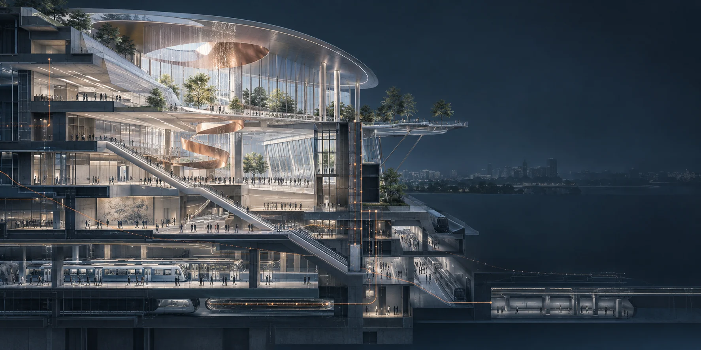

智能空间方向
目前在智能空间方向工作，关注空间交互、实时内容与物理环境的结合。

关于我的工作
我有 8 年以上三维美术相关经验。曾负责游戏场景、智慧城市、工业仿真与车机 HMI 项目，也带领 UE 美术团队制定技术路线、把控进度与视觉质量。近期的工作方向是智能空间。
美术表达 / 数据流程 / 实时交互
精选作品
以下画面选自个人作品资料。点击项目可以查看完整图集与工作说明。
动态影像
两段来自作品资料的短片。点按播放，观看动效与场景节奏。

正在探索 · 智能空间
工作经历
过去的项目经验，让我逐步从场景制作走向视觉技术与团队管理。
目前在智能空间方向工作，关注空间交互、实时内容与物理环境的结合。
负责美术团队管理与车机项目的需求拆解、技术路线和视觉质量把控；参与深蓝 S05 / S07 量产项目及奥迪 POC 验证。
带领 UE 美术团队完成智慧城市与工业仿真项目，推进 Houdini、PCG、Cesium 与数据处理的项目应用。
参与智慧城市可视化项目，负责场景制作、GIS 数据处理，以及 BIM 与 UE 联动的画面落地。
根据项目需求制作产品动画与仿真画面，关注专业性、准确性与视觉效果。
参与游戏场景和道具制作，完成高低模、材质与引擎效果调试。
实践笔记
项目背后的方法，比一张最终效果图更值得记录。
 场景制作 / GIS / UE从 GIS 数据到 UE 场景：可视化项目的几个关键环节阅读笔记
场景制作 / GIS / UE从 GIS 数据到 UE 场景：可视化项目的几个关键环节阅读笔记 智能空间 / 车机 HMI / 实时视觉 / UE 场景